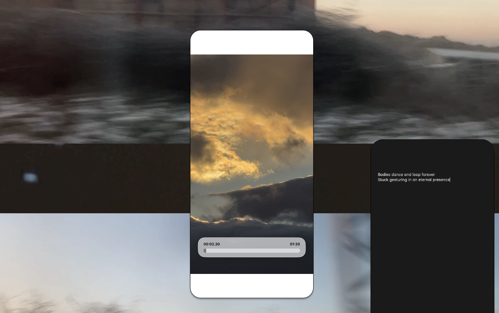
and the horizon told me nothing, Research project (2026)
Rocks of desire, Research project (2025)
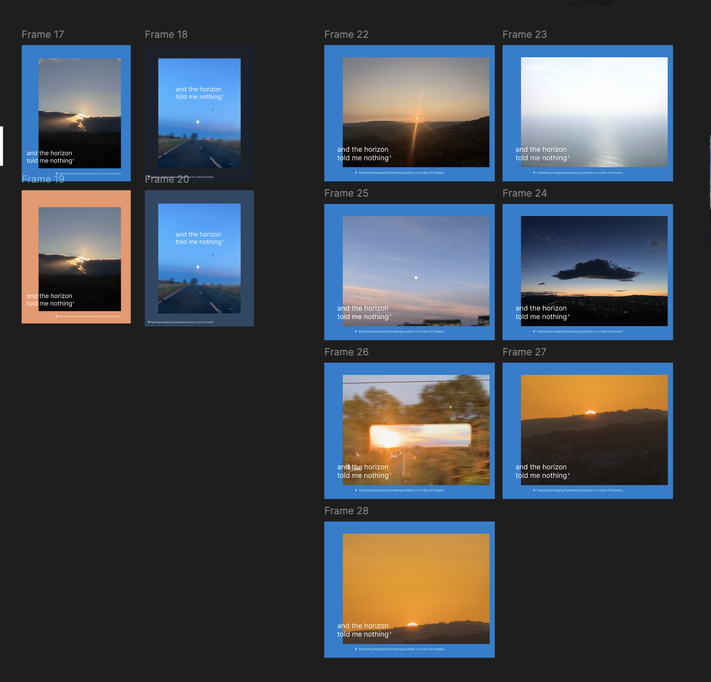
and the horizon told me nothing, Research project (2026)
Unstable connection
If we were to create an image to accompany this journey, we might picture an earnest reader, seated at a desk, who slowly slips further and further into the screen - subsumed, and finally dispersed amongst the data cables. A reflection of the dream-like entanglement of humans in a networked Web, and a rearrangement of our autonomy
From, From endless strolling to endless scrolling: Constellations and Networks, After Walter Benjamin

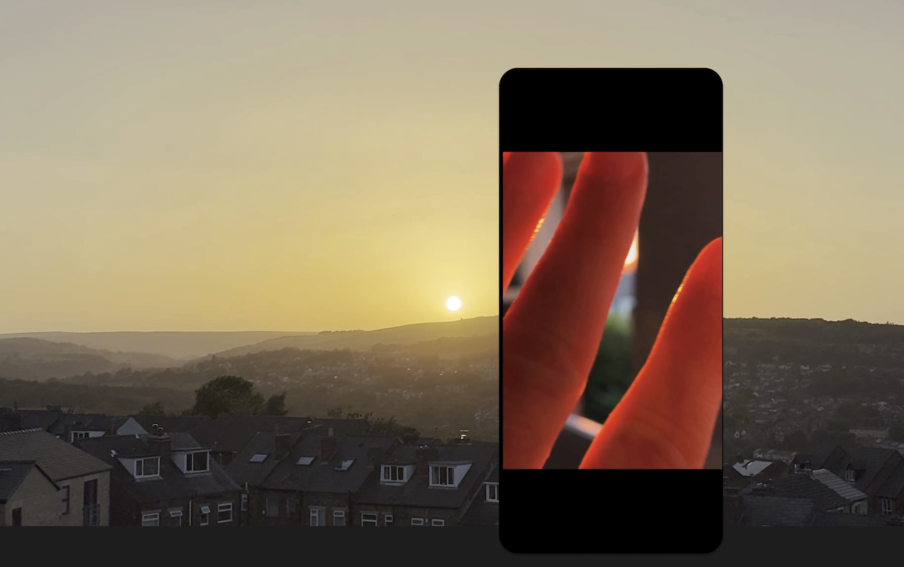
and the horizon told me nothing, Research project (2026)
I'm looking, I'm looking.
I think I'm looking further, when actually I'm looking back at myself
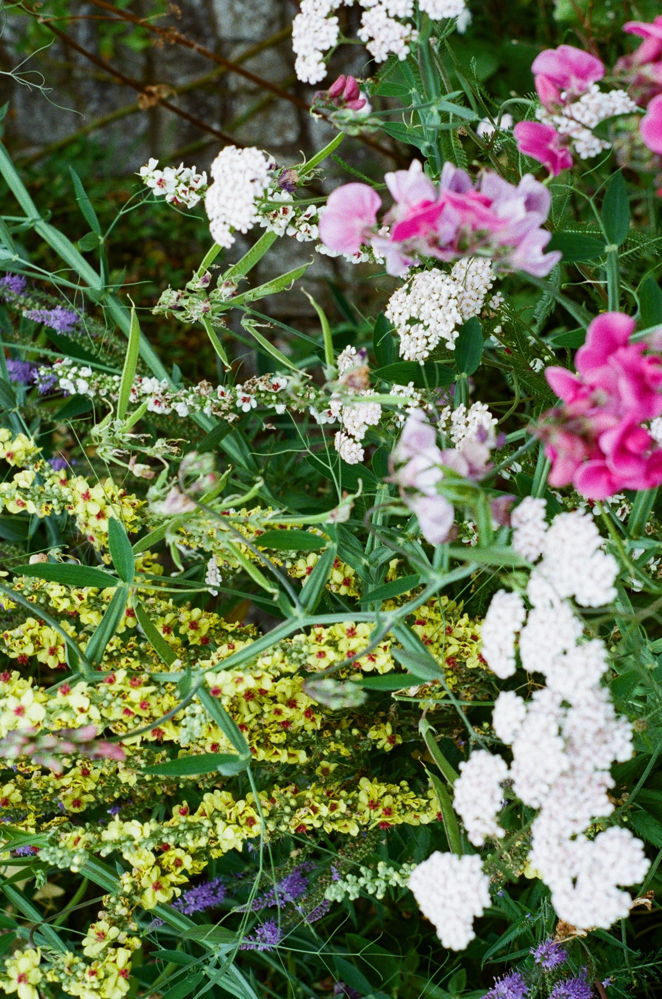
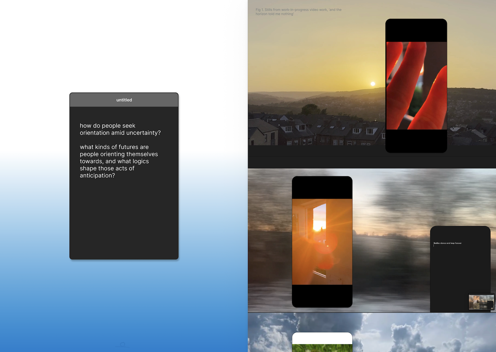
and the horizon told me nothing, Research project (2026)
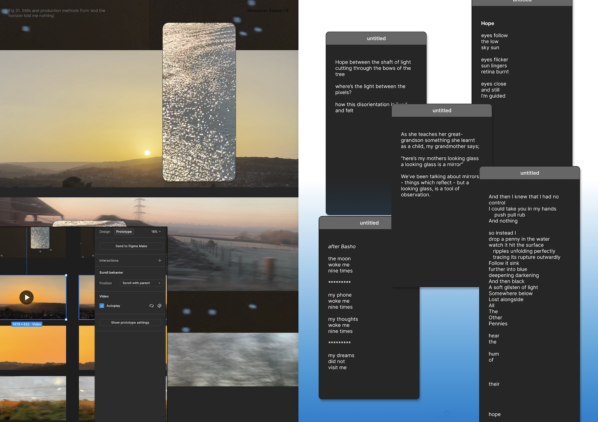
and the horizon told me nothing, Research project (2026)
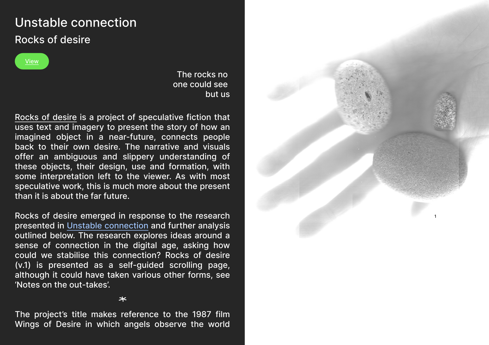
Rocks of desire, Research project (2025)
ambient everything
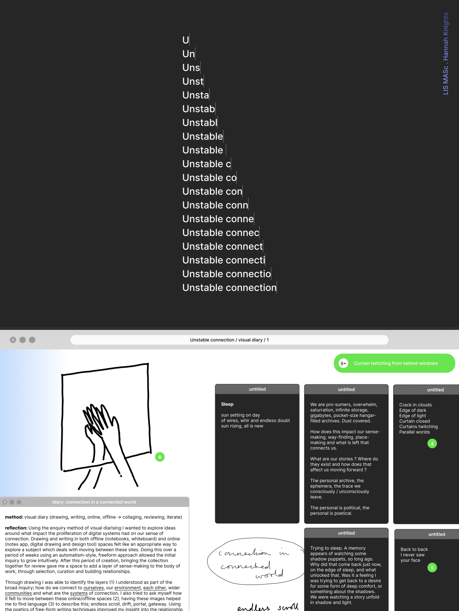
Unstable connection, Research project (2025)
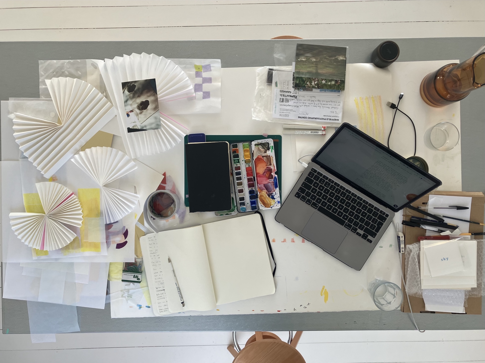
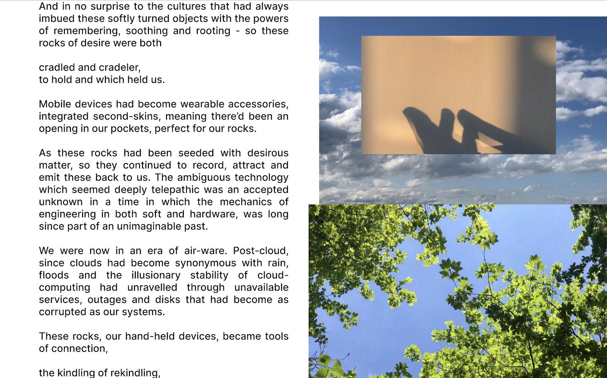
Rocks of desire, Research project (2025)
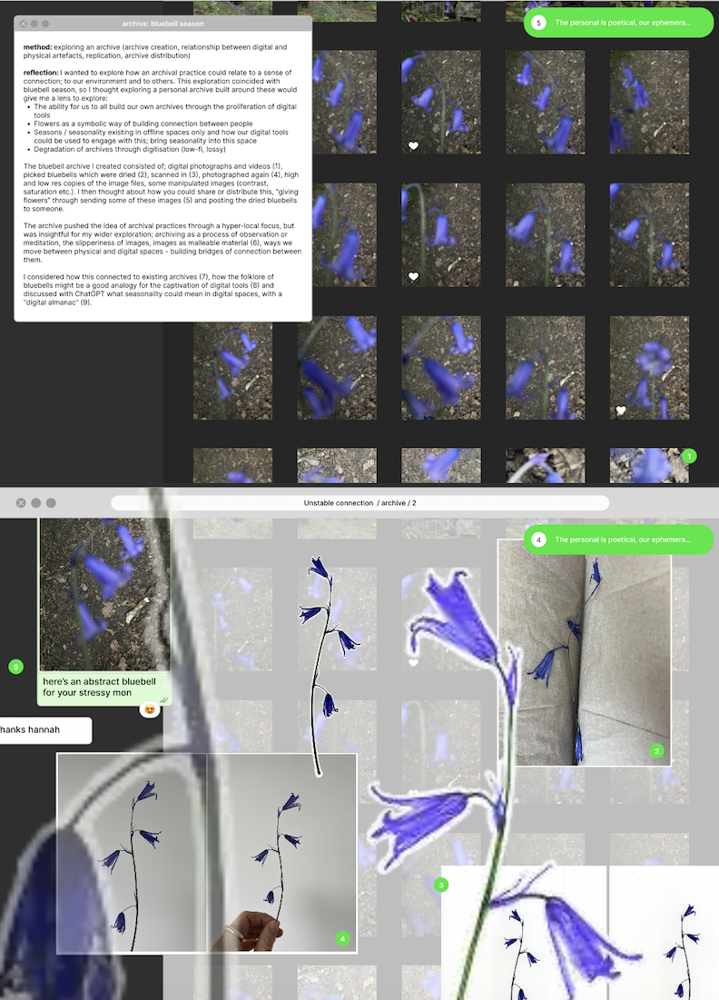
Unstable connection, Research project (2025)
how is disorientation and a search for orientation, lived and felt?
From, and the horizon told me nothing: Exploring emerging forecasting practices in a crisis of future(s)